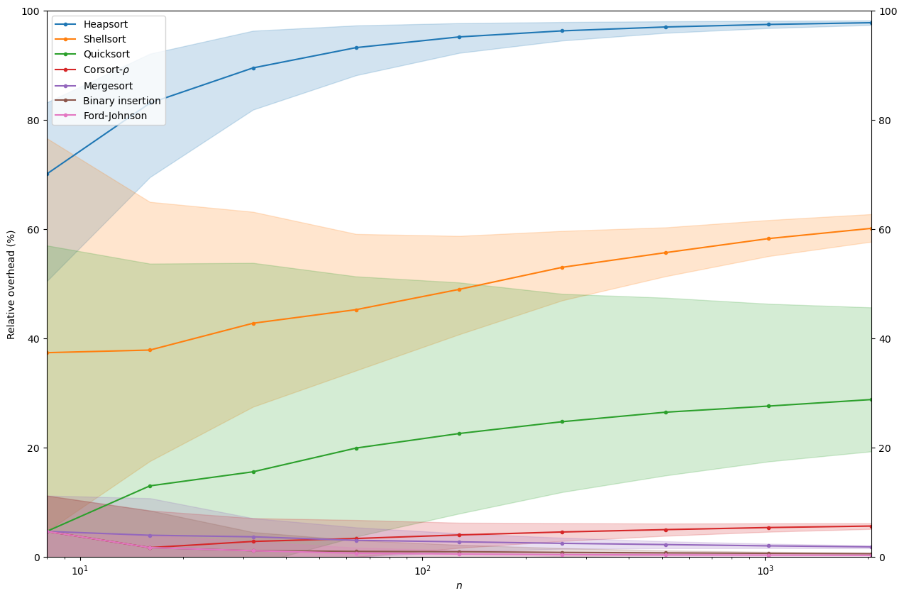

Termination times
This notebook shows how to use the corsort package to determine the average termination time of several sorting algorithms.
Here the following sorts will be compared:
Heapsort
Shellsort
Quicksort
Corsort-\(\Delta\)
Mergesort
Binary insertion
Ford-Johnson
First we load some packages.
[1]:
import numpy as np
from matplotlib import pyplot as plt
from multiprocess.pool import Pool
from corsort import *
We populate the list of sorts we want to study.
[2]:
sort_list = [JitHeapsort(), SortShell(), SortQuick(),
JitCorsortDeltaMaxRho(), SortMergeTopDown(),
SortBinaryInsertion(), SortFordJohnson()]
legends = {'heapsort': 'Heapsort',
'shellsort': 'Shellsort',
'quicksort': 'Quicksort',
'corsort_delta_max_rho': r"Corsort-$\rho$",
'mergesort_top_down': 'Mergesort',
'binary_insertion_sort': 'Binary insertion',
'ford_johnson': "Ford-Johnson"}
We decide the values of \(n\) to study and the number of trials.
[3]:
n_list = [2**i for i in range(3, 12)]
nt = 10000
We now run the experiments, with some multi-processing to speed-up things.
[4]:
with Pool() as p:
comparisons = evaluate_comparisons(n_list=n_list, sort_list=sort_list, nt=nt, pool=p)
Evaluate comparisons of heapsort for n = 8
100%|██████████| 10000/10000 [00:11<00:00, 841.85it/s]
Evaluate comparisons of shellsort for n = 8
100%|██████████| 10000/10000 [00:04<00:00, 2344.40it/s]
Evaluate comparisons of quicksort for n = 8
100%|██████████| 10000/10000 [00:04<00:00, 2355.38it/s]
Evaluate comparisons of corsort_delta_max_rho for n = 8
100%|██████████| 10000/10000 [00:16<00:00, 624.70it/s]
Evaluate comparisons of mergesort_top_down for n = 8
100%|██████████| 10000/10000 [00:06<00:00, 1666.56it/s]
Evaluate comparisons of binary_insertion_sort for n = 8
100%|██████████| 10000/10000 [00:09<00:00, 1011.24it/s]
Evaluate comparisons of ford_johnson for n = 8
100%|██████████| 10000/10000 [00:08<00:00, 1164.60it/s]
Evaluate comparisons of heapsort for n = 16
100%|██████████| 10000/10000 [00:35<00:00, 285.13it/s]
Evaluate comparisons of shellsort for n = 16
100%|██████████| 10000/10000 [00:22<00:00, 451.41it/s]
Evaluate comparisons of quicksort for n = 16
100%|██████████| 10000/10000 [00:14<00:00, 667.70it/s]
Evaluate comparisons of corsort_delta_max_rho for n = 16
100%|██████████| 10000/10000 [00:56<00:00, 177.30it/s]
Evaluate comparisons of mergesort_top_down for n = 16
100%|██████████| 10000/10000 [00:25<00:00, 385.96it/s]
Evaluate comparisons of binary_insertion_sort for n = 16
100%|██████████| 10000/10000 [00:29<00:00, 336.20it/s]
Evaluate comparisons of ford_johnson for n = 16
100%|██████████| 10000/10000 [00:27<00:00, 362.09it/s]
Evaluate comparisons of heapsort for n = 32
100%|██████████| 10000/10000 [01:02<00:00, 159.69it/s]
Evaluate comparisons of shellsort for n = 32
100%|██████████| 10000/10000 [00:42<00:00, 236.68it/s]
Evaluate comparisons of quicksort for n = 32
100%|██████████| 10000/10000 [00:37<00:00, 267.40it/s]
Evaluate comparisons of corsort_delta_max_rho for n = 32
100%|██████████| 10000/10000 [01:40<00:00, 99.07it/s]
Evaluate comparisons of mergesort_top_down for n = 32
100%|██████████| 10000/10000 [00:41<00:00, 239.40it/s]
Evaluate comparisons of binary_insertion_sort for n = 32
100%|██████████| 10000/10000 [00:39<00:00, 253.58it/s]
Evaluate comparisons of ford_johnson for n = 32
100%|██████████| 10000/10000 [00:36<00:00, 275.44it/s]
Evaluate comparisons of heapsort for n = 64
100%|██████████| 10000/10000 [01:42<00:00, 97.29it/s]
Evaluate comparisons of shellsort for n = 64
100%|██████████| 10000/10000 [00:48<00:00, 206.46it/s]
Evaluate comparisons of quicksort for n = 64
100%|██████████| 10000/10000 [00:39<00:00, 250.50it/s]
Evaluate comparisons of corsort_delta_max_rho for n = 64
100%|██████████| 10000/10000 [02:10<00:00, 76.78it/s]
Evaluate comparisons of mergesort_top_down for n = 64
100%|██████████| 10000/10000 [00:44<00:00, 227.12it/s]
Evaluate comparisons of binary_insertion_sort for n = 64
100%|██████████| 10000/10000 [00:39<00:00, 254.93it/s]
Evaluate comparisons of ford_johnson for n = 64
100%|██████████| 10000/10000 [00:33<00:00, 295.54it/s]
Evaluate comparisons of heapsort for n = 128
100%|██████████| 10000/10000 [01:34<00:00, 105.99it/s]
Evaluate comparisons of shellsort for n = 128
100%|██████████| 10000/10000 [01:39<00:00, 100.90it/s]
Evaluate comparisons of quicksort for n = 128
100%|██████████| 10000/10000 [01:04<00:00, 155.36it/s]
Evaluate comparisons of corsort_delta_max_rho for n = 128
100%|██████████| 10000/10000 [02:26<00:00, 68.29it/s]
Evaluate comparisons of mergesort_top_down for n = 128
100%|██████████| 10000/10000 [01:18<00:00, 127.53it/s]
Evaluate comparisons of binary_insertion_sort for n = 128
100%|██████████| 10000/10000 [00:54<00:00, 181.83it/s]
Evaluate comparisons of ford_johnson for n = 128
100%|██████████| 10000/10000 [00:41<00:00, 238.24it/s]
Evaluate comparisons of heapsort for n = 256
100%|██████████| 10000/10000 [01:37<00:00, 102.11it/s]
Evaluate comparisons of shellsort for n = 256
100%|██████████| 10000/10000 [03:26<00:00, 48.48it/s]
Evaluate comparisons of quicksort for n = 256
100%|██████████| 10000/10000 [02:12<00:00, 75.40it/s]
Evaluate comparisons of corsort_delta_max_rho for n = 256
100%|██████████| 10000/10000 [02:16<00:00, 73.19it/s]
Evaluate comparisons of mergesort_top_down for n = 256
100%|██████████| 10000/10000 [03:08<00:00, 53.06it/s]
Evaluate comparisons of binary_insertion_sort for n = 256
100%|██████████| 10000/10000 [02:03<00:00, 81.21it/s]
Evaluate comparisons of ford_johnson for n = 256
100%|██████████| 10000/10000 [00:57<00:00, 174.28it/s]
Evaluate comparisons of heapsort for n = 512
100%|██████████| 10000/10000 [02:11<00:00, 76.32it/s]
Evaluate comparisons of shellsort for n = 512
100%|██████████| 10000/10000 [06:59<00:00, 23.84it/s]
Evaluate comparisons of quicksort for n = 512
100%|██████████| 10000/10000 [04:57<00:00, 33.66it/s]
Evaluate comparisons of corsort_delta_max_rho for n = 512
100%|██████████| 10000/10000 [17:44<00:00, 9.40it/s]
Evaluate comparisons of mergesort_top_down for n = 512
100%|██████████| 10000/10000 [05:43<00:00, 29.10it/s]
Evaluate comparisons of binary_insertion_sort for n = 512
100%|██████████| 10000/10000 [03:53<00:00, 42.89it/s]
Evaluate comparisons of ford_johnson for n = 512
100%|██████████| 10000/10000 [02:39<00:00, 62.74it/s]
Evaluate comparisons of heapsort for n = 1024
100%|██████████| 10000/10000 [04:22<00:00, 38.14it/s]
Evaluate comparisons of shellsort for n = 1024
100%|██████████| 10000/10000 [13:26<00:00, 12.40it/s]
Evaluate comparisons of quicksort for n = 1024
100%|██████████| 10000/10000 [08:52<00:00, 18.77it/s]
Evaluate comparisons of corsort_delta_max_rho for n = 1024
100%|██████████| 10000/10000 [2:33:02<00:00, 1.09it/s]
Evaluate comparisons of mergesort_top_down for n = 1024
100%|██████████| 10000/10000 [10:30<00:00, 15.86it/s]
Evaluate comparisons of binary_insertion_sort for n = 1024
100%|██████████| 10000/10000 [07:31<00:00, 22.13it/s]
Evaluate comparisons of ford_johnson for n = 1024
100%|██████████| 10000/10000 [04:16<00:00, 38.94it/s]
Evaluate comparisons of heapsort for n = 2048
100%|██████████| 10000/10000 [07:55<00:00, 21.04it/s]
Evaluate comparisons of shellsort for n = 2048
100%|██████████| 10000/10000 [24:50<00:00, 6.71it/s]
Evaluate comparisons of quicksort for n = 2048
100%|██████████| 10000/10000 [16:31<00:00, 10.08it/s]
Evaluate comparisons of corsort_delta_max_rho for n = 2048
100%|██████████| 10000/10000 [8:50:53<00:00, 3.19s/it]
Evaluate comparisons of mergesort_top_down for n = 2048
100%|██████████| 10000/10000 [04:32<00:00, 36.64it/s]
Evaluate comparisons of binary_insertion_sort for n = 2048
100%|██████████| 10000/10000 [03:13<00:00, 51.79it/s]
Evaluate comparisons of ford_johnson for n = 2048
100%|██████████| 10000/10000 [01:45<00:00, 94.52it/s]
We save the raw results.
[5]:
import dill as pickle
from pathlib import Path
fn = Path(f"terminations_n_{n_list[0]}_N_{n_list[-1]}_nt_{nt}.pkl")
if fn.exists():
with open(fn, 'rb') as f:
comparisons = pickle.load(f)
else:
with open(fn, 'wb') as f:
pickle.dump(comparisons, f)
Then we display the results.
[6]:
fig = plt.figure(figsize=(15, 10))
ax = plt.axes()
ax.set_xscale("log")
color_dict = auto_colors(sort_list)
for name in legends:
stats = comparisons[name]
color = color_dict[name]
n_list = [n for n in stats]
bounds = np.array([entropy_bound(n) for n in n_list])
times = stats.values()
q = np.zeros((5, len(times)), dtype=int)
for i, per in enumerate([2.5, 50, 97.5]):
for j, s in enumerate(times):
q[i, j] = np.percentile(s, per)
q = 100*(q/bounds-1)
ax.plot(n_list, q[1, :], marker='.', label=legends[name], color=color)
ax.fill_between(n_list, q[0, :], q[2, :], alpha=.2, color=color)
ax.legend(loc=2)
ax.tick_params(labelright=True, right=True)
plt.ylabel('Relative overhead (%)')
plt.xlabel('$n$')
plt.ylim([0, 100])
plt.xlim([n_list[0], n_list[-1]])
plt.show()
